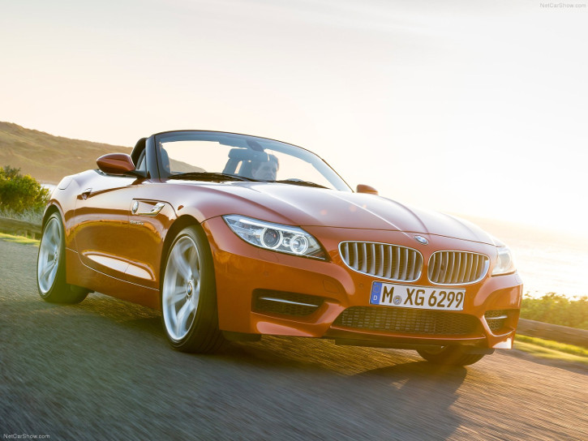

BMW Z4 sDrive35is
Specifications
Power: 340 hp
Torque: 450 Nm
0 to 100 kph: 4.8 s
Top Speed: 250 kph
Weight: 1580 kg
Vehicle Type:
front engine, rear wheel drive, 2 passenger, 2 door roadster
Engine:
Type: Twin turbocharged I6
Displacement: 2979 cc
Power: 340 hp @ 5900 rpm
Torque: 450 Nm @ 4500 rpm, 500 Nm overboost
Transmission: 7 speed automatic with manual shifting mode
Price: $65,800; ₹ 70 lakhs
Related Links
Official site
More info @ wikipedia
Wallpapers
Youtube
Reviews
- 

{kind=link}
{kind=link}
{kind=link}
{kind=link}
{kind=link}
{kind=link}
{kind=link}
{kind=link}
{kind=link}
{kind=link}
{kind=link}
{kind=link}
{kind=link}
{kind=link}
{kind=link}
{kind=link}
{kind=link}
{kind=link}
{kind=link}
{kind=link}
{kind=link}
The BMW Z4 Roadster represents the interplay of classical proportions and state-of-the-art technology. An updated version of the modern classic is set to arrive in BMW showrooms in time for spring 2013.
The new BMW Z4 represents a time-honored and yet contemporary interpretation of the traditional roadster concept. New exterior features, detailed interior refinements, the new Hyper Orange design package, as well as availability of the full range of BMW ConnectedDrive features all provide fresh impetus and lend the BMW Roadster even greater appeal and individuality.
The new BMW Z4 takes to the stage 25 years after the legendary BMW Z1 began the modern era of BMW Roadsters. That Roadster turned heads when it was unveiled at the 1987 Frankfurt Auto Show not only for its revolutionary door concept, but also thanks to its agile and responsive handling. With the BMW Z1 began the latest chapter in the history of BMW Roadsters - a tradition which stretches back to the 1930s and reached the first of many high points with the BMW 328 (winner of the 1940 Mille Miglia) and BMW 507 from 1955. The BMW Z3 and BMW Z8 triggered a fresh wave of excitement for the classic open-top two-seater concept in the 1990s. And they also paved the way for the first-generation BMW Z4 and its successor, the brand's first Roadster fitted with a retractable hardtop.
Design: classical proportions infused with modern character
The success of modern-day BMW Roadsters is rooted in the rigorous dedication of a concept, a process which has left its mark on both the design and the driving properties of each car and is clearly recognizable in the new BMW Z4. The sweeping hood, long wheelbase, low beltline and low-slung rear end play a more vivid and uncompromising part in shaping its appearance than is evident with any of its segment rivals. The low seating position just ahead of the rear axle gives the driver and passenger a particularly intense experience of the longitudinal and lateral forces working on the rear wheels. This sense of being "part of the car" also allows the driver to feel more in touch with the road.
The hardtop roof also blends seamlessly into the car's form. As it closes, it seals a smoothly flowing roofline, while large window surfaces optimize all-round visibility and the feeling of space inside the car. Once opened, the two roof elements are accommodated, one on top of the other, in a compact package inside the Roadster's trunk. The A-pillars - painted an understated black - also underline the low-slung silhouette of the new BMW Z4, especially when the roof is open. The optional BMW Individual hardtop - available in the two contrast colors, Jet Black and Titanium Silver metallic - provides a feast for the eyes when the roof is closed. The hardtop can be opened at the touch of a button while the car is moving at up to 25 mph (40 km/h) in an automated process lasting 19 seconds.
The distinctive four round headlights team up with the broad BMW kidney grille to form a roadster-specific interpretation of the brand's signature face. The standard Xenon headlights of the new BMW Z4 have a slim design and extend well into the front wheel arches. They feature LED light rings which emit daytime driving light in the brand's hallmark style. Added to which, the light sources now have a strikingly three-dimensional design which accentuates the intricate technology of the headlights. Cutting across the tops of the headlights are LED accent lights, whose metal insert bears BMW lettering. The integrated turn signal indicators have chrome-coloured surrounds, which lend further emphasis to the sophisticated character of the light units. Plus, a newly designed, tapered surround for the side indicators adds a dynamic sweep to the gills on the front side sections of the car.
Striking touches: new paint finishes, Hyper Orange Design package, a new alloy wheel and the M Sport package
A total of 11 external paint finishes are available for the new BMW Z4, including the new Mineral Grey metallic, Glacier Silver metallic and Valencia Orange metallic, which can only be ordered together with the Hyper Orange package. This new aesthetic/design package lends the Roadster a lively aura; the interior, for example, boasts an energy-charged contrast of black and orange. The bespoke Alcantara door panel trim, like the lower section of the instrument panel, comes in orange. The black leather seats have contrast stitching in Valencia Orange and an accent stripe running down the central section of the backrests and seat cushions. This stripe is likewise orange and is flanked by two thin white lines. The door panel trim and lower section of the instrument panel can also be specified in black as an option. Another exclusive element of the Hyper Orange package is the metal weave trim strip, which can be combined with further decorative elements in high-gloss black for the door openers and the gearshift or selector lever. This new Design package replaces the previously available Citrus Yellow Package and is also available in combination with other exterior paint colors as an option.
New interior additions to standard specification include high-gloss black surrounds for the central air vents and the iDrive control system's folding Control Display, which comes as part of the optional navigation system. Elsewhere, exquisite Fineline Anthracite wood has been added to the selection of interior trim strips available as an option for the new BMW Z4. The BMW Z4 sDrive28i, BMW Z4 sDrive35i and BMW Z4 sDrive35is are offered with Kansas leather trim. The range of light-alloy wheels includes a newly designed V-Spoke 18-inch wheels combined with staggered front and rear tire sizes.
The engaging character of the Roadster as a driver's tool is given particular emphasis by the optional M Sport package, which includes Adaptive M suspension, 18-inch M light-alloy wheels and an M aerodynamics package with large air intakes in the front wing and a rear bumper inlay painted Anthracite metallic. Bringing an extra dose of sporting flair into the interior, meanwhile, are features such as sports seats, an M leather steering wheel, M driver's footrest, M door sill finishers and an anthracite-colored roof liner. The Aluminum Carbon trim strip, M leather gear lever knob and grey dials for the instrument cluster lend the finishing touches to the interior ambience. The new BMW Z4 sDrive35is comes with a model-specific version of the M Sport package.
Engines: BMW TwinPower Turbo technology in three output levels
The BMW Z4 will continue to be available in the US with one four-cylinder and two inline-six powerplants. Their most significant shared feature is BMW TwinPower Turbo technology, which ensures an exceptionally effective balance between driving pleasure and fuel consumption throughout the range.
The BMW sDrive28i features BMW's award-winning TwinPower Turbo 2.0-liter four cylinder engine, which produces 240 horsepower and 260 lb-ft of torque. It powers the BMW Roadster from 0 - 60 mph in 5.5 seconds with the 6-speed manual (5.6 with the 8-speed automatic) and returns EPA mileage estimates of 22 mpg city/ 34 mpg highway and 26 mpg combined with the manual and 24/33/26 for the 8-speed automatic). The BMW Z4 sDrive35i features BMW's N54 TwinPower Turbo 3.0-liter inline-6, producing 300 hp and 300 lb-ft of torque. It goes 0 - 60 mph in five seconds flat with the7-speed DCT (5.1 with the 6-speed manual) with EPA mileage estimates of 19 mpg city/ 26 mpg highway and 21 mpg combined with the manual and 17/24/19 for the 7-speed DCT. The top-range Z4 sDrive35is features a higher-output version of BMW's venerable N54 producing 335 hp and 332 lb-ft of torque and the 7-speed DCT. The top model goes from 0 - 60 mph in just 4.8 seconds without a penalty to the EPA mileage estimates.
Extensive comfort-enhancing equipment
The new BMW Z4 delivers the driving pleasure customers have come to expect from the brand, fulfilling the desire for both sporting ability and comfort. Drivers can use the standard Driving Experience Control switch to select a configuration to suit the situation at hand and satisfy personal preferences. COMFORT, SPORT and SPORT+ modes can all be called up using the rocker switch on the center console. As well as adjusting the responses of the engine and DSC stability system, the different modes also alter the shift characteristics of the automatic gearbox, the responses of the Servotronic function and the mapping of the electronically controlled dampers, if these items are specified. These modes allow the driver to choose from a selection of distinctive and clearly differentiated set-ups for the car.
Other items of equipment fitted as standard are Xenon headlights, automatic climate control, a heated glass rear window, the Soft Close Automatic function for the boot lid and runflat tires with a tire pressure monitor. The standard Z4 sound system includes CD player, AUX-IN socket and 11 loudspeakers. Customers can also choose the optional Premium Sound System with higher output and 14 loudspeakers. The optional navigation system enables high-resolution map graphics - complete with 3D view - on the 8.8-inch iDrive monitor. The navigation data for the system is stored on an in-car hard disk, which also provides 12 GB of capacity for personal music collections.
The range of driver assistance systems and mobility services from BMW ConnectedDrive has also expanded once again. The new BMW Z4 can be equipped with features such as High Beam Assistant and Park Distance Control with sensors at the front and rear of the car. If the navigation system is specified, the ConnectedDrive Services options allow use of internet-based information and entertainment services inside the car. This system must be fitted to enable access to the BMW Online portal and apps using the Control Display and iDrive Controller. The Real Time Traffic Information function is also on hand, supplying the driver with congestion warnings and diversion recommendations in real time. Apple iPhone owners can use BMW apps, for example, to receive web radio stations, display Facebook and Twitter posts on the monitor and ask for them to be read out. BMW Apps also enhanced safe, convenient access to music streaming services like Pandora, MOG and Aupeo as well as Stitcher. The range of BMW ConnectedDrive features available for the new BMW Z4 also includes BMW TeleServices, BMW Remote Services, Concierge Services and enhanced Automatic Collision Notification with automatic vehicle location and accident severity detection.
Transmission
The BMW E89 Z4 35is comes exclusively with a computer-controlled overboost function. The boost function activates after every gear change with full throttle, and lasts for 7 seconds between 1500 and 4500rpm. During that time frame, the car will have reached 500Nm of torque for 1-2 seconds, an increase of 50Nm (37lb-ft) over the 450Nm (332lb-ft) without overboost. The full 500Nm comes in 3rd-7th gear only.